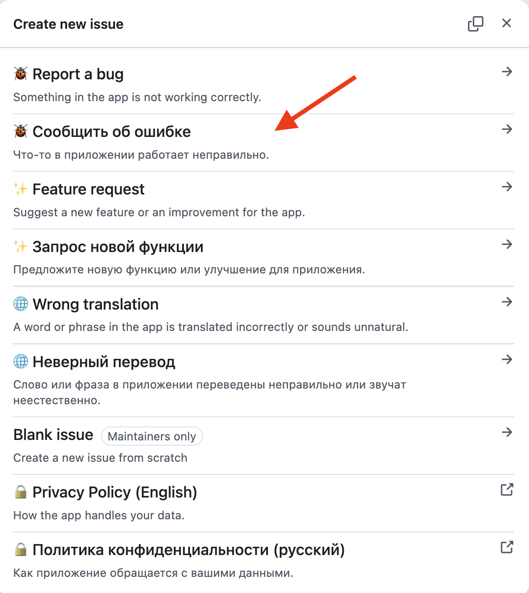
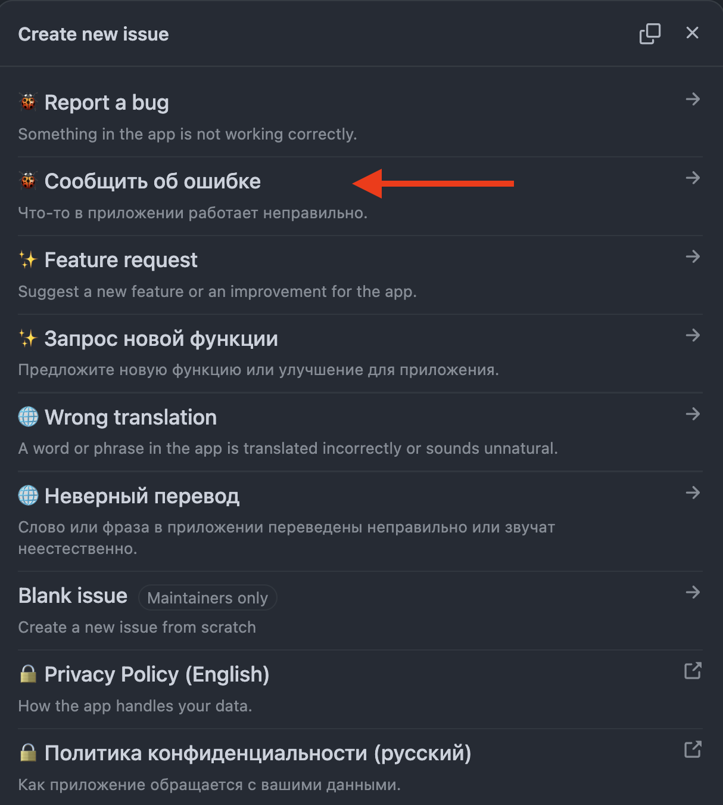
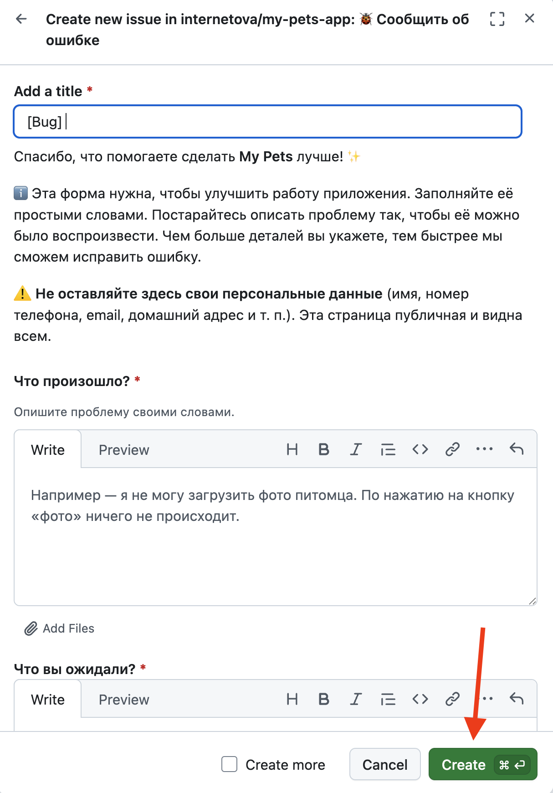
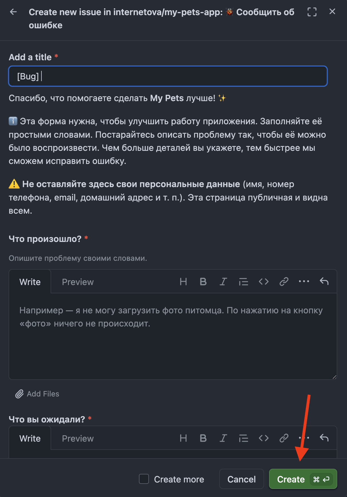

Если в приложении «Мои питомцы» что-то работает не так, вы можете рассказать об этом разработчику. Для этого не нужно быть программистом — достаточно описать проблему простыми словами. Чем понятнее вы опишете, что случилось, тем быстрее ошибку получится найти и исправить.
Сообщения об ошибках собираются на странице Issues («обращения») в GitHub — это открытый список, где каждый может рассказать о проблеме или предложить улучшение.
ℹ️ Чтобы отправить обращение, нужен бесплатный аккаунт GitHub и вход в него. Если аккаунта ещё нет, его можно завести за пару минут — кнопка регистрации есть на сайте GitHub.
⚠️ Не указывайте в обращении личные данные (имя, номер телефона, электронную почту, домашний адрес и т. п.). Страница открытая и видна всем.
Перейдите на страницу обращений приложения.
Сначала посмотрите список уже открытых обращений — возможно, о вашей проблеме уже написал кто-то другой. Если вы нашли похожее обращение, откройте его и добавьте свой комментарий: так разработчику будет проще понять, что проблема встречается у нескольких человек. Создавать новое обращение в этом случае не нужно.
Если ничего похожего нет — нажмите зелёную кнопку New issue («новое обращение») в правом верхнем углу.


Откроется окно с выбором типа обращения. Нажмите 🐞 Сообщить об ошибке — этот вариант подходит, когда что-то в приложении работает неправильно.
В этом же окне есть и другие варианты: ✨ Запрос новой функции — если хотите предложить улучшение, и 🌐 Неверный перевод — если в приложении встретилась ошибка или неточность в тексте. Выбирайте русские варианты — их названия написаны по-русски.


Откроется форма. Заполните её простыми словами:
[Bug] уже подставлена, допишите суть после неё.В конце поставьте галочку о том, что вы не оставили в обращении личных данных, и нажмите зелёную кнопку Create («создать»).


Готово! Обращение появится в общем списке, и разработчик его увидит. Если понадобятся уточнения, ответ придёт прямо в вашем обращении — время от времени заглядывайте туда. Спасибо, что помогаете сделать приложение лучше! ✨